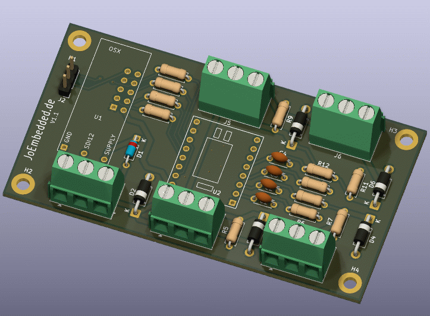

PCB V1.1 für 0/4-20 mA (weitere Versionen: PT100, Brücke, ...)
Der T350 ("OSX Typ350") ist ein hochpräziser, universeller analoger
Datenerfassungsknoten auf Basis des ADS1220. Er unterstützt bis zu
8 physikalische Messkanäle (Betriebsarten), die über
das Array ad_physkan[] im Firmware-Source fest konfiguriert
sind.
Typische Anwendungen:
| Signal | Pin | Farbe (Kabel) | Richtung am AD |
|---|---|---|---|
| SCLK | IX_SCL | gelb | IN |
| DIN (MOSI) | IX_SDA | grün | IN |
| DO / #DRDY | IX_X0 | weiß | OUT |
| #DRDY | IX_X1 | blau | OUT |
| #Vcc (Pwr) | IX_X2 | – | LOW = EIN |
Note
Der ADS1220 wird mit dauerhaft LOW gezogenem #CS betrieben (SPI-Mode 1, CPOL=0, CPHA=1). Nach PowerOff zieht IX_X2 die SPI-Leitungen via 2 × 15 kΩ auf GND.
ad_physkan[])Die Firmware kennt 8 physikalische Kanäle (Indices
0–7). Jeder Kanal hat eine fest konfigurierte Betriebsart
(typ), ADS1220-Registerkonfiguration, Mittelwertbildung und
Einheit.
typ)typ |
Konstante | Beschreibung |
|---|---|---|
| 1 | P_TYP_ITEMP |
Interne Chiptemperatur des ADS1220 |
| 2 | P_TYP_PT100_A |
PT100 via 2 kΩ Referenz + IDAC 1 mA + Polynom-Linearisierung |
| 3 | P_TYP_STD |
Standard-AD (single-ended oder differential), Ergebnis in mV oder Counts |
| Idx | SDI-12-Cmd | Typ | Konfiguration | SPS | Mittelwert | Kalibrierung | Einheit | Messzeit |
|---|---|---|---|---|---|---|---|---|
| 0 | M2 | 1 | Interne Temperatur | 45 | 1× | nein | oC_int |
~22 ms |
| 1 | M3 | 2 | PT100 (ext. Ref, IDAC) | 45 | 8× | ja | oC_PT100 |
~453 ms |
| 2 | M4 | 3 | Single-Ended AIN0 | 45 | 4× | ja | mV_S0 |
~275 ms |
| 3 | M5 | 3 | Single-Ended AIN1 | 45 | 4× | ja | mV_S1 |
~275 ms |
| 4 | M6 | 3 | Single-Ended AIN2 | 45 | 4× | ja | mV_S2 |
~275 ms |
| 5 | M7 | 3 | Single-Ended AIN3 | 45 | 4× | ja | mV_S2 |
~275 ms |
| 6 | M8 | 3 | Differentiell AIN0–AIN1 | 45 | 8× | ja | mV_D01 |
~453 ms |
| 7 | M9 | 3 | Differentiell AIN2–AIN3 | 45 | 8× | ja | mV_D23 |
~453 ms |
Kalibrierung (Kali-Flag): Wenn aktiv, wird vor der eigentlichen Messung automatisch ein Offset-Nullpunkt durch internes Kurzschließen der Eingänge (AIN_p/n auf AVDD/2) ermittelt und subtrahiert. Dies verdoppelt näherungsweise die Messzeit.
oC_int)ITEMP_CONFIG = 0x5022E0
TS_ENA (interner Temperatursensor aktiv), Single-Shot,
externe Referenz (irrelevant), FIR 50/60 HzoC_PT100)Note
Hardware muss PT100 unterstützen
T = c0 + c1 ⋅ x + c2 ⋅ x2
mit der Linearisierung:
c0 = −2, 457390 × 102, c1 = 7, 022650 × 10−5, c2 = 8, 966090 × 10−13
PT100_CONFIG = 0x80562406
Caution
Liegt der Rohwert außerhalb des Gültigkeitsbereichs, gibt der PT100-Kanal –99 °C zurück (Sensorbruch oder Bereich –70 … +120 °C überschritten).
mV_…)SE_MULTI_G1 = 2.4414e-4 (2,4414 ×
10⁻⁴) → Ergebnis in mVSE_CONFIG = 0x102481DE_MULTI_G128 = 1.907e-6 (1,907 ×
10⁻⁶) → Ergebnis in mVDE_CONFIG = 0x10240ENote
Hardware muss für 0/4–20-mA-Strommessung einen 100 Ohm Shuntwiderstand haben. Für Brückenmessung sollte die Brücke auf einen Pegel von ca. 1 V gelegt werden, z.B. durch einen hochohmigen Spannungsteiler.
Note
Die Messung erfolgt mit den regulären SDI-12-Befehlen
aM!, aM1! … aM9! (und natürlich
auch in Kombination mit CRC: aMC!, aMC1! …
aMC9!). Hier werden allerdings nur die Kommandos
M und später X und I
dokumentiert, alle anderen Kommandos entsprechen dem Standard SDI-12
V1.3 (siehe SDI-12 Spezifikation).
| Befehl | Kanäle | Beschreibung |
|---|---|---|
aM! |
Alle aktiven Kanäle | Misst alle Kanäle, deren Bit im m0_mask-Register
gesetzt ist |
aM1! |
Alle aktiven + VSup | Wie M, zusätzlich Versorgungsspannung
(VSup) als letzter Kanal |
aM2! |
Kanal 0 (intern Temp) | Nur interne Chiptemperatur (oC_int) |
aM3! |
Kanal 1 (PT100) | Nur PT100-Temperatur (oC_PT100) |
aM4! |
Kanal 2 (SE AIN0) | Nur Single-Ended-Kanal AIN0 (mV_S0) |
aM5! |
Kanal 3 (SE AIN1) | Nur Single-Ended-Kanal AIN1 (mV_S1) |
aM6! |
Kanal 4 (SE AIN2) | Nur Single-Ended-Kanal AIN2 (mV_S2) |
aM7! |
Kanal 5 (SE AIN3) | Nur Single-Ended-Kanal AIN3 (mV_S2) |
aM8! |
Kanal 6 (DE AIN0–AIN1) | Nur Differentiell AIN0–AIN1 (mV_D01) |
aM9! |
Kanal 7 (DE AIN2–AIN3) | Nur Differentiell AIN2–AIN3 (mV_D23) |
a= SDI-12-Adresse des Sensors (Standard:0)
Fehlerwerte im Messergebnis:
| Wert | Bedeutung |
|---|---|
–99 |
PT100: Außerhalb Messbereich / Bruch |
–9998 |
AD-Initialisierungsfehler |
–9999 |
Allgemeiner Messfehler |
X-Kommandos)Alle Konfigurationsbefehle beginnen mit aX gefolgt vom
jeweiligen Befehlsbuchstaben. Zum Lesen wird kein
=-Zeichen verwendet, zum Schreiben mit
=Wert. Jeder Befehl wird mit !
abgeschlossen.
Warning
Alle Parameteränderungen sind flüchtig (RAM). Erst
aXWrite! speichert sie dauerhaft im Flash (NVM).
K) – Individuelle Skalierung pro KanalJeder physikalische Kanal hat 2 Koeffizienten:
Multi (Index gerade) und Offset (Index
ungerade).
Anwendungsreihenfolge:
Ergebnis = (AD-Rohwert × Kanal-Multi) × Kn_Multi − Kn_OffsetKoeffizienten-Tabelle:
| Nr. | Name | Default |
|---|---|---|
| K0 | Temp_int.Multi | 1,0 |
| K1 | Temp_int.Offset | 0,0 |
| K2 | Temp_PT100.Multi | 1,0 |
| K3 | Temp_PT100.Offset | 0,0 |
| K4 | SEnd_0.Multi | 1,0 |
| K5 | SEnd_0.Offset | 0,0 |
| K6 | SEnd_1.Multi | 1,0 |
| K7 | SEnd_1.Offset | 0,0 |
| K8 | SEnd_2.Multi | 1,0 |
| K9 | SEnd_2.Offset | 0,0 |
| K10 | SEnd_3.Multi | 1,0 |
| K11 | SEnd_3.Offset | 0,0 |
| K12 | Diff_01.Multi | 1,0 |
| K13 | Diff_01.Offset | 0,0 |
| K14 | Diff_23.Multi | 1,0 |
| K15 | Diff_23.Offset | 0,0 |
Syntax:
| Befehl | Funktion | Beispiel |
|---|---|---|
aXKn! |
Koeffizient n lesen | 0XK2! |
aXKn=Wert! |
Koeffizient n setzen | 0XK3=0.5! |
Antwort: aKn=Wert (z. B.
0K3=0.500000)
B) – Aktive Kanäle bei M / M1Die Bitmaske m0_mask (1 Byte) steuert, welche Kanäle bei
M und M1 gemessen werden.
Bit 0 → Kanal 0 (iTemp), Bit 1 → Kanal 1 (PT100), … , Bit 7 → Kanal 7
(DE23).
Default-Wert: m0_mask = 60 =
0b00111100 → Kanäle 2, 3, 4, 5 aktiv (SE AIN0–AIN3)
60 = 4 + 8 + 16 + 32 = Bit 2 + Bit 3 + Bit 4 + Bit 5
| Befehl | Funktion | Beispiel |
|---|---|---|
aXB! |
Aktuelle Maske lesen | 0XB! |
aXB=Wert! |
Maske setzen (1–255, dezimal) | 0XB=60! (nur SE AIN0–AIN3) |
Antwort: aB=Wert (z. B.
0B=60)
Bit-Zuordnung der Kanäle:
| Bit | Bitwert | Kanal | Beschreibung | Aktiv bei m0_mask=60? |
|---|---|---|---|---|
| 0 | 1 | 0 | Interne Temperatur | nein |
| 1 | 2 | 1 | PT100 | nein |
| 2 | 4 | 2 | SE AIN0 (mV_S0) | ja |
| 3 | 8 | 3 | SE AIN1 (mV_S1) | ja |
| 4 | 16 | 4 | SE AIN2 (mV_S2) | ja |
| 5 | 32 | 5 | SE AIN3 (mV_S2) | ja |
| 6 | 64 | 6 | Diff AIN0–AIN1 | nein |
| 7 | 128 | 7 | Diff AIN2–AIN3 | nein |
Beispiel: Alle SE-Kanäle + PT100 aktivieren
0XB=62! 62 = 2+4+8+16+32 (PT100 + SE AIN0…AIN3)
0XWrite!Kanal-Aktivstatus und vollständige
k-Ausgabe → Abschnitt 5.1.
U) – Kanalbezeichnung
überschreibenJeder Kanal hat eine Standard-Einheit aus ad_physkan[]
(z. B. oC_PT100). Diese kann pro Kanal überschrieben werden
(max. 8 Zeichen). Bei leerem String wird die Standard-Einheit
verwendet.
| Befehl | Funktion | Beispiel |
|---|---|---|
aXUn! |
Einheit von Kanal n lesen | 0XU1! |
aXUn=Text! |
Einheit von Kanal n setzen | 0XU1=degC! |
aXUn=! |
Einheit von Kanal n zurücksetzen | 0XU1=! |
Antwort: aUn='Text' (z. B.
0U1='degC')
P) – NachkommastellenLegt die Anzahl der Nachkommastellen für die SDI-12-Ausgabe fest
(0–9).
Sonderwert 7, 8, 9: Standardformat %+f
(printf-default).
Formatcodes:
| P-Wert | Format | Beispiel-Ausgabe |
|---|---|---|
| 0 | %+.0f |
+23 |
| 1 | %+.1f |
+23.4 |
| 2 | %+.2f |
+23.45 |
| 3 | %+.3f |
+23.450 |
| 4–6 | … | … |
| 7–9 | %+f |
printf-default |
| Befehl | Funktion | Beispiel |
|---|---|---|
aXPn! |
Präzision von Kanal n lesen | 0XP1! |
aXPn=Wert! |
Präzision von Kanal n setzen (0–9) | 0XP1=3! |
Antwort: aPn=Wert (z. B.
0P1=3)
| Befehl | Funktion |
|---|---|
aXWrite! |
Alle Parameter (SDI-Adresse, Koeffizienten, Maske, Einheiten, Präzision) dauerhaft im Flash speichern |
aXSensor! |
Sensortyp abfragen → Antwort: aADS1220! |
Important
aXWrite! muss nach jeder
Konfigurationsänderung explizit aufgerufen werden – andernfalls gehen
alle Änderungen beim nächsten Neustart verloren.
Diese Befehle sind über die serielle Debugschnittstelle (tb_tools UART) verfügbar.
device_type_cmdline)| Befehl | Funktion |
|---|---|
k |
Alle Koeffizienten (K0–K15) mit Namen, aktuellem Wert, Einheit, Präzision und Aktivstatus (ON/Bitnummer) ausgeben |
p |
(Reserviert, ohne Funktion) |
Beispielausgabe k (bei m0_mask = 60
– nur SE AIN0…AIN3 aktiv):
>k
K0: 1.000000 Temp_int.Multi(f) (Def: 1.0) Unit:'oC_int' Prec:2 OFF(1)
K1: 0.000000 Temp_int.Offset(f) (Def: 0.0)
K2: 1.000000 Temp_PT100.Multi(f) (Def: 1.0) Unit:'oC_PT100' Prec:3 OFF(2)
K3: 0.000000 Temp_PT100.Offset(f) (Def: 0.0)
K4: 1.000000 SEnd_0.Multi(f) (Def: 1.0) Unit:'mV_S0' Prec:9 ON(4)*
K5: 0.000000 SEnd_0.Offset(f) (Def: 0.0)
K6: 1.000000 SEnd_1.Multi(f) (Def: 1.0) Unit:'mV_S1' Prec:9 ON(8)*
K7: 0.000000 SEnd_1.Offset(f) (Def: 0.0)
K8: 1.000000 SEnd_2.Multi(f) (Def: 1.0) Unit:'mV_S2' Prec:9 ON(16)*
K9: 0.000000 SEnd_2.Offset(f) (Def: 0.0)
K10: 1.000000 SEnd_3.Multi(f) (Def: 1.0) Unit:'mV_S2' Prec:9 ON(32)*
K11: 0.000000 SEnd_3.Offset(f) (Def: 0.0)
K12: 1.000000 Diff_01.Multi(f) (Def: 1.0) Unit:'mV_D01' Prec:9 OFF(64)
K13: 0.000000 Diff_01.Offset(f) (Def: 0.0)
K14: 1.000000 Diff_23.Multi(f) (Def: 1.0) Unit:'mV_D23' Prec:9 OFF(128)
K15: 0.000000 Diff_23.Offset(f) (Def: 0.0)
Bitmask Channels: 60Die Spalte am Zeilenende zeigt:
ON(Bitwert)* – Kanal ist aktiv (Bit in
m0_mask gesetzt)OFF(Bitwert) – Kanal ist inaktiv (Bit nicht
gesetzt)#define DEBUG aktiv)Tip
Debug-Befehle sind nur verfügbar, wenn #define DEBUG in
der Firmware aktiv ist.
| Befehl | Funktion |
|---|---|
a<n> |
Kanal n (0–7) in Dauerschleife messen und Rohwert, Laufzeit und physikalisches Ergebnis ausgeben. Beenden mit beliebiger Taste. |
Beispielausgabe a1 (PT100):
Val:1
AD-Reset: 0
Res:3456789 (P:470/Real:463 msec) => +21.456 oC_PT100
Res:3456901 (P:470/Real:461 msec) => +21.458 oC_PT100
...
AD-DeepsleepAlle veränderbaren Betriebsparameter werden im internen Flash des Prozessors gespeichert:
| Parameter | Inhalt |
|---|---|
param.koeff[] |
16 Float-Koeffizienten (K0–K15) |
param.m0_mask |
Kanalmaske für M / M1 |
param.precision[] |
Ausgabepräzision pro Kanal (0–9) |
param.ind_unit[] |
Individuelle Einheiten pro Kanal |
param.ble_advname |
BLE-Advertising-Name |
| SDI-12-Adresse | Gespeichert unter ID_INTMEM_SDIADR |
Speichern erfolgt ausschließlich durch
aXWrite!(→ Abschnitt 4.5).
Die Sensor-ID hat folgendes Format:
TT_A24_A_0350_OSX<MAC_Low_HEX>Beispiel: TT_A24_A_0350_OSX1A2B3C4D
TT = TT (interne Kennung)A24 = Analog Sensor 24 BitA = Software-Kennung0350 = Device-TypOSX = OSX-Master-Plattform<MAC> = Untere 32 Bit der BLE-MAC-Adresse
(entspricht Standard BLE-Advertising-Name)| Parameter | Standardwert |
|---|---|
| SDI-12-Adresse | 0 |
| m0_mask | 60 (Kanäle 2–5 aktiv: SE AIN0…AIN3) |
| Präzision | K0:2, K1:3, K2–K7:9 (printf-default) |
| Alle Koeffizienten | Multi=1,0, Offset=0,0 |
| Individuelle Einheiten | leer (Kanalstandard) |
aM! Alle aktiven Kanäle messen
aM1! Alle aktiven Kanäle + Versorgungsspannung
aM2! – aM9! Einzelkanal 0–7 messen
aXKn! Koeffizient n lesen
aXKn=val! Koeffizient n setzen
aXB! Kanalmaske lesen
aXB=val! Kanalmaske setzen (z. B. 60 = nur SE AIN0…AIN3)
aXUn! Einheit Kanal n lesen
aXUn=str! Einheit Kanal n setzen
aXPn! Präzision Kanal n lesen
aXPn=val! Präzision Kanal n setzen (0–9)
aXWrite! Parameter in Flash speichern
aXSensor! Sensortyp abfragen